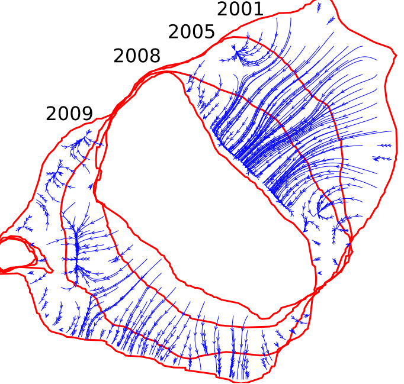
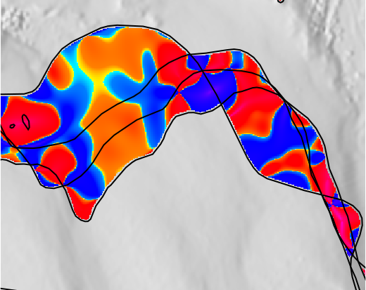
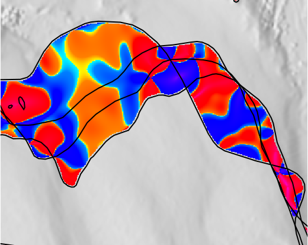

Mapping gradient fields of landform migration
using an open science approach
Vaclav Petras
April 17, 2015
Graduate Student Seminar
Department of Marine, Earth and Atmospheric Sciences
North Carolina State University
Terrain time series animation
Jockey’s Ridge dune

Created in GRASS GIS Animation Tool
Shoreline transects
Connecting contours

Isosurface of a countour (Jockey’s Ridge dune)

Created in GRASS GIS 3D Viewer (NVIZ)
Gradient field of horizontal migration

Digital elevation model for tests


Using Tangible Landscape
Contours, year 2001, contour 110m

Contours, year 2005, contour 110m

Contours, year 2008, contour 110m

Contours, year 2009, contour 110m

Only 110m contours, ignoring rest

Assign years as heights

Create surface from contours

Looks like terrain but height is time

Gradient field (vector field)

Gradient field (vector field) lines
Comet-like visualization
Inspired by Tokyo Wind Speed application by Cameron Beccario.
Derived from air.js source code.
Uses HTML, CSS, JavaScript and D3.js library.
Gradient field and rate of change

Jockey's Ridge dune (north side)
Advantages
- visual and quantitative technique
- magnitude and direction of change
- spatial distribution of rate of change
- flexible detection of areas with changes
Current and future work
-
spatio-temporal interpolation
- getting the intermediate contours
- generating terrain from them
- relation of surface curvature to terrain temporal changes
- combining results for different heights
 

Possible applications
-
analysis or model calibration
- evolving shorelines
- evolving islands
- disease spread
- fire spread
- glacier melting
-
terrain analysis
- computing rates of change
- computing rate of change of change
- terrain terrain interpolation
Simulation of wildfire in Shenandoah
Uses GRASS Web Publishing and GRASS Leaflet Publishing
Motivation for open science
Software [...] developed as part of novel methods is as important for the method's implementation [...] Such software [...] must be made available to readers upon publication.
—Nature Methods - 4, 189 (2007)

Image credit: opensource.com
Motivation for open science
The opposite of ‘open’ isn’t closed. The opposite of open is ‘broken.’
—John Wilbanks

Image credit: opensource.com
Availability
-
Method and use cases:
- Geomorphometry 2015 Conference Proceedings [accepted]
- open access
- CC BY-ND
- can be implemented in any GIS-like software
-
Software source code:
- https://github.com/ncsu-osgeorel/spatio-temporal-contour-evolution
- GNU GPL (code can be copied and changed)
- depends only on GRASS GIS (anybody can have what is needed)
- GRASS GIS module (convenient to get, ready to use)
- will be moved to official GRASS GIS repository


Thank you
This project was funded by the US Army Research Office, grant W911NF1110146.
Everything in the presentation including the presentation itself was created using free, libre and open source software tools.